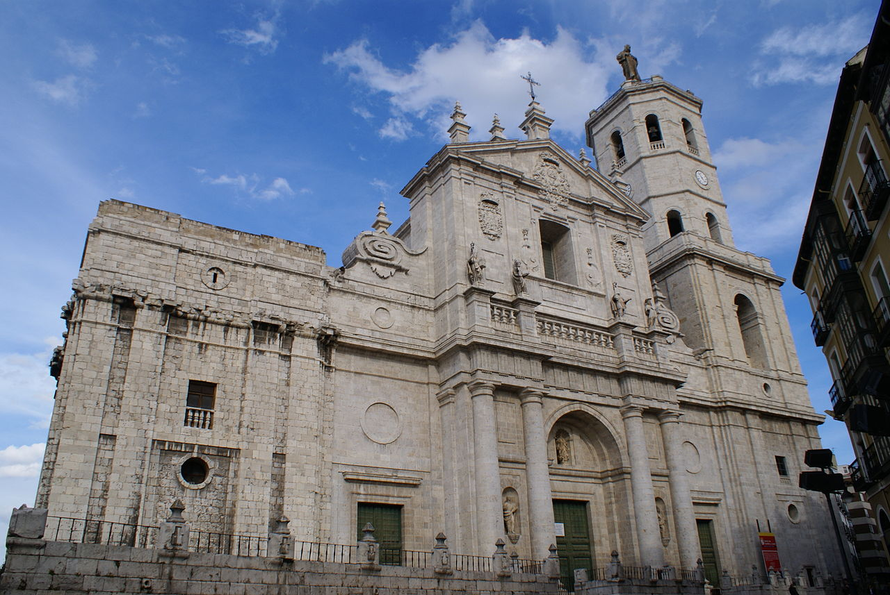
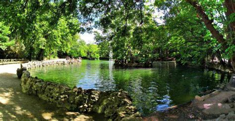

Espagne -Valladolid-
Nos destinations
Espagne (Valladolid)
Explorez Valladolid
Se divertir
Des lieux à voir, des rues à explorer et des expériences emblématiques.
Cathédrale de Valladolid

Campo grande

Se reposer
Un mélange de charme, de modernité et de valeurs sûres.
Le camping Riberduero
Guiapoligonos hotel